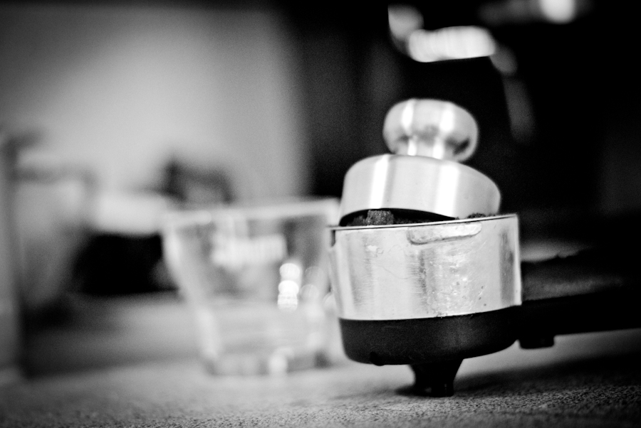

Espresso at homeBREW METHOD / ESPRESSO
Home Espresso Machine
A pump-driven machine for rich espresso with a crema top. Suited to daily use with a grinder that gives fine, even grounds.
How to use: Dose 18g of finely ground coffee, tamp level, lock in the portafilter and pull a shot in about 25 to 30 seconds.
MWK 350,000 / unit